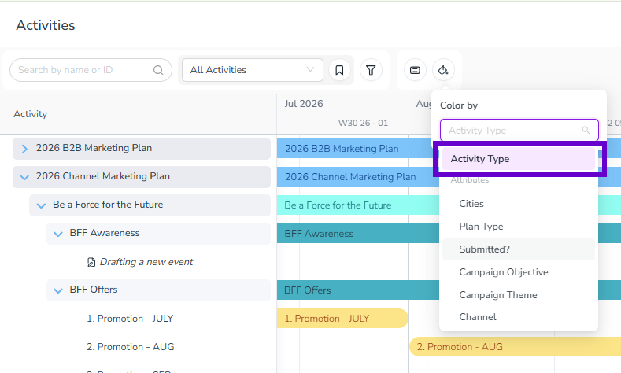
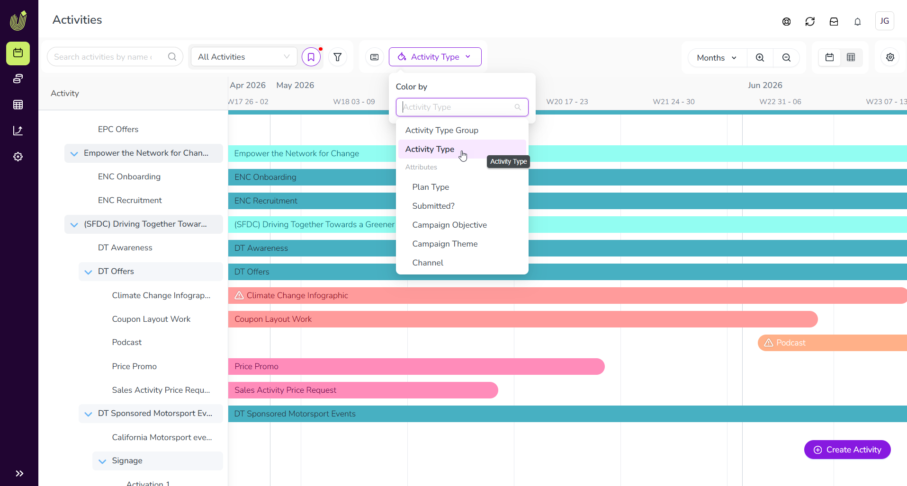
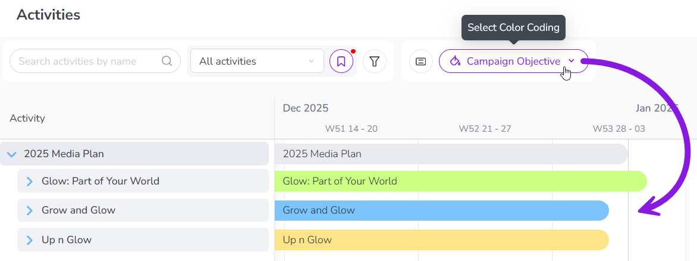
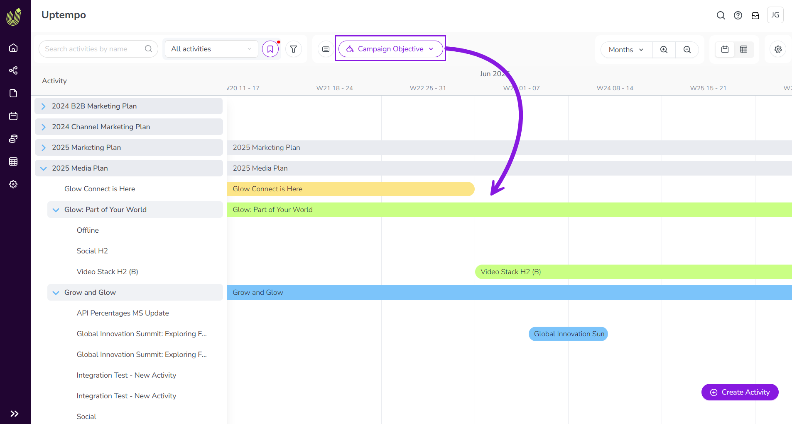

Color-code Timeline activity bars
In the Timeline display mode, marketing activities are represented by horizontal bars. To make it easier to identify activities at a glance, you can use the  Select Color-Coding menu in the toolbar to color-code the activity bars based on:
Select Color-Coding menu in the toolbar to color-code the activity bars based on:
Activity Type: Color-codes the bars according to the activity's specific activity type. If a type doesn't have its own color set, its bars use the color set for the type's group instead.
Attribute: Color-codes the bars according to which list option of a selected single-select (Drop-Down List) attribute is set on each activity.
Color-code activities by type
Activity Type is always available in the  Select Color-Coding menu, and is the default color-coding method for the Timeline.
Select Color-Coding menu, and is the default color-coding method for the Timeline.


Color-code activity bars by activity type
In the
 Activities section, select the Timeline display mode.
Activities section, select the Timeline display mode.In the table controls, click
 Select Color-Coding. The Color by menu panel opens.
Select Color-Coding. The Color by menu panel opens.Select Activity Type. This is the default, so you only need this step if you're switching back from color-coding by attribute.
The activity bars change color based on each activity's type. Types without their own color use their type group's color instead:


Color-code activities by attribute
When an attribute has been set up for color-coding, the attribute is shown as an option in the  Select Color-Coding menu, under the section Attributes:
Select Color-Coding menu, under the section Attributes:

After you select an attribute from the  Select Color-Coding menu, each activity bar is displayed in a preset color based on the attribute option set on that activity.
Select Color-Coding menu, each activity bar is displayed in a preset color based on the attribute option set on that activity.
- Example
In this example, the Campaign Objective attribute has color-coding enabled, with the following colors assigned to each attribute value:
Sales Enablement: Green
Reputation: Blue
Demand Creation: Yellow
After you select the attribute Campaign Objective in the
Select Color-Coding menu, the activity bars for activities with this attribute are displayed in the specified colors according to the attribute value that's assigned to them:The activity bar for the activity Glow: Part of Your World is displayed in green, because its Campaign Objective attribute is set to Sales Enablement.
The activity bar for the activity Grow and Glow is displayed in blue, because its Campaign Objective attribute is set to Reputation.
The activity bar for the activity Up n Glow is displayed in yellow, because its Campaign Objective attribute is set to Demand Creation.
The activity bar for the parent activity 2025 Media Plan is displayed in grey, because it either does not have the Campaign Objective attribute, or does not have a value for that attribute.


Color-code activity bars by attribute value
In the
Activities section, select the Timeline display mode.In the table controls, click
Select Color-Coding. The Color by menu panel opens.Use the Color by menu to select the attribute you want to use to color-code the activity bars:
The activity bars in the Timeline change color based on the attribute option set on them for the selected attribute:


To remove the attribute-based color-coding again, select the Activity Type option from the Color by menu.